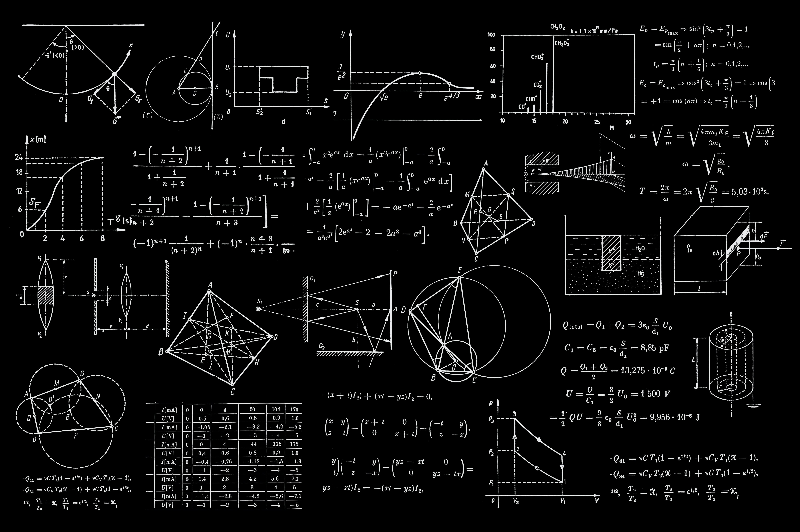

A Daily Dose of Physics
This page is going to include helpful concepts in theoretic and experimental physics to make you interested in physics.
Let's learn some concepts in physics
Learn about Hall effect and it's signature in superconducting materials.
What is the limit of resistance one can measure?
How do you know how low the resistance is once the material goes through the phase transition to superconductivity state? and what do we mean by zero resistance?
Life of an experimental physicist
If you want to know what is the life of an physics experimentalist look like and what are the device we use on a daily basis you can learn in here.

Here are some of the devices we use in physics laboratory
As a experimental physicist you need to be familiar with the different devices which allow you to measure physical properties of materials.
Physical Property Measurement System (PPMS)
One of the essential measurements in a physics lab is a transport properties like measuring resistivity, Ac Susceptibility, Hall effect, and other kind of transport properties. The Physical Property Measurement System or PPMS for short is the device which makes these kind of experiment happen. The cool thing about PPMS or device like that is the possibility of measuring the transport properties of all kind of material at very low temperature down to few mK. PPMS system is designed to measure the physical properties of materials in bulk, thin film, and powder form.
X-Ray Diffractometer(XRD)
X-Ray diffraction is a technique used to determine the atomic and molecular structure of materials. In crystal, atoms are placed align with each other and they have regular spacing where this spacing is about 10 A. The general process that happens in XRD is look exactly like diffraction. The wavelength of the visible light is about 400 - 700 nm which is way bigger than the crystal spacing so we can not have this diffraction in the crystal with the visible light. However, if we can find a wavelength comparable to the atomic spacing 10 -10 m we can get a lot of information about the crystal by having the reflection in the crystal. As a matter of fact, x-ray light has this similar wavelength and this whole process is called X-Ray diffraction. Note that, we only get x-ray diffraction in the crystalline structure and there is no diffraction pattern for amorphous structures since they don't have any regular spacing.

Read more on XRD and the theories related to diffraction.
SQUID magnetometer
A SQUID (superconducting quantum interference device) is a very sensitive magnetometer used to measure extremely subtle magnetic fields, based on superconducting loops containing Josephson junctions. SQUIDs are sensitive enough to measure fields as low as 5×10−14 T with a few days of averaged measurements. The mechanism of SQUID magnetometer is explained in the diagram. The sample is shown as green which has some magnetization (a dipole field is shown in the figure). The sample is put on the rod and it put up and down through the coil, it generates current in the coil because there is a change in flux associated with this coil. There is a SQUID loop fat away from this region and through the flux transformer there are current which are induced in the pick-up coils. currents flow and generate the magnetic flux in the SQUID loop. The SQUID detects the magnetic flux and tells you how much current is present. The field that is generated in the SQUID loop is proportional to how much current is induced in the coil through which the magnetized sample is moving. In this way even a very weak magnetized samples which induced a very weak currents in pick-up coil can be detected using a SQUID magnetometer.
Also, note that the SQUID loop is kept far away from the sample and pick-up coil and it is kept in a magnetically shielded region because if we want to apply a magnetic field to the sample this magnetic field should not affect the SQUID.Radio Frequency (RF) magnetron sputtering
A magnetron sputtering system is a technological equipment which allows depositing thin films by sputtering of a target material in a magnetron discharge plasma. This type of system is based on the formation of electric and magnetic fields perpendicular to each other in the near‐cathode region.
Ion beam milling system
Ion beam milling system is used to etch sample mainly for patterning process.
Pulsed Laser Deposition (PLD) technique
Pulsed laser deposition is the technique to make a thin films of materials.
Atomic Force Microscopy (AFM)
Atomic-force microscopy (AFM) is a powerful technique that can image almost any type of surface, including polymers, ceramics, composites, glass, and biological samples. AFM is used to measure and localize many forces, including adhesion strength, magnetic forces, and mechanical properties.
Nano-scale fabrication (Photolithography Technique)
In order to study quantum materials, doing a nano-scale fabrication is necessary.
Clean rooms
Hopefully you learned something new here. See you next time!